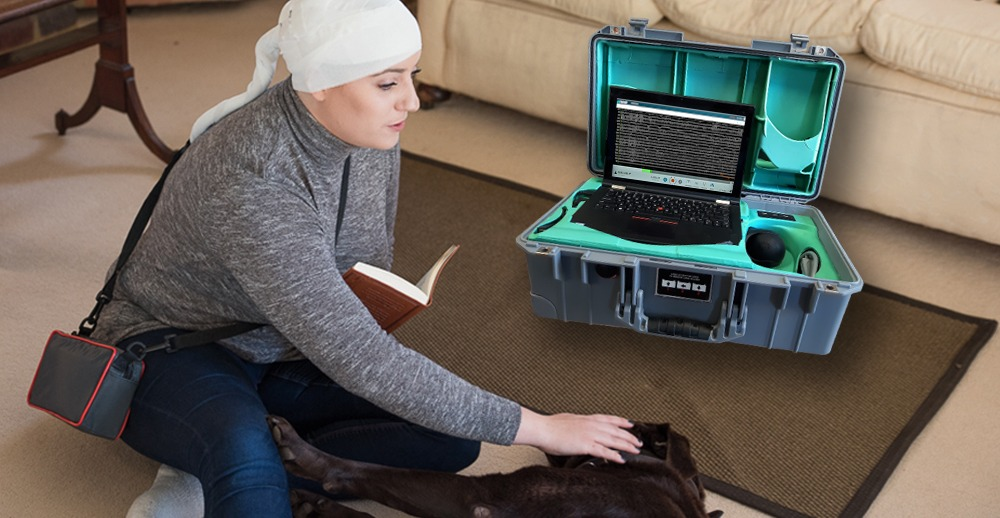

Your Trusted Clinical Partner for Ambulatory EEG
Nexus Diagnostics handles the entire workflow — insurance authorization, patient scheduling, technician dispatch, data capture, and report delivery. You order the study. We do the rest.
Built Around the Way You Practice
In-Home Ambulatory EEG
Your patients stay comfortable at home while our certified technicians capture clinical-grade EEG data with synchronized video and audio. Studies up to 7 days.
View service detailsWeb-Based Interpreting
No software to install. Interpret EEG studies from any browser. Daily reports, non-destructive pruning, and pruned/clipped formats delivered automatically.
View software detailsIn-Office Routine EEG
We bring the equipment and technicians to your practice. No capital investment, no maintenance overhead. Results delivered through our platform.
View service detailsFrom Referral to Results
Ordering an ambulatory EEG through Nexus takes three steps. We handle everything in between.
Submit a Referral
Complete the referral form with patient demographics, insurance information, diagnosis codes (e.g., G40.109, R55, R42), and recent clinical notes. Fax to (561) 258-8154 or submit electronically.
Insurance Authorization
Nexus contacts the insurance company to verify coverage and obtain authorization. If pre-authorization is required, we handle the entire process so your staff doesn't have to.
Technician Dispatch
Once authorized, we schedule the study and dispatch a certified EEG technician directly to the patient's home. The technician handles electrode placement, equipment setup, and patient orientation.
Results Delivered
Study data is uploaded to our web-based interpreting platform. Daily reports are generated automatically. Interpret the study from any browser at your convenience.
What to Include in Your Order
Electronic orders must include the following. Incomplete submissions may delay scheduling.
Fax Referrals
Fax complete referrals with all required documentation. Incomplete submissions may delay authorization.
Electronic Submission
Prefer electronic orders? Submit through our online portal for faster processing and real-time status updates.
Go to ordering portalClinical-Grade Equipment, Anywhere
Our ambulatory EEG technology is built for extended in-home studies without compromising data quality.
7-Day Continuous Recording
Extend the capture window to increase diagnostic yield for intermittent epileptiform events and seizure activity.
Synchronized Video & Audio
Complete clinical context with time-synchronized video and audio alongside EEG data for accurate event correlation.
Remote Quality Monitoring
Our technicians remotely verify data integrity throughout the study to ensure the recording meets clinical standards.
Portable Equipment
Patients can move the unit as needed within their home. Built for real-world environments without sacrificing data quality.

Common Questions from Physicians
See the Platform in Action
Request an example study to experience our web-based interpreting software. Or call us directly to discuss how Nexus can support your practice.